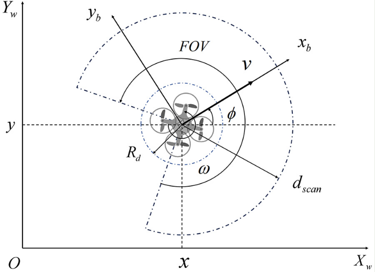
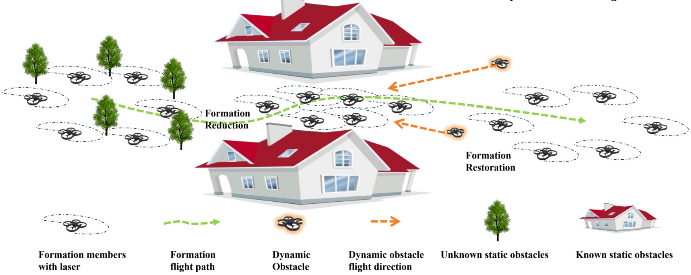
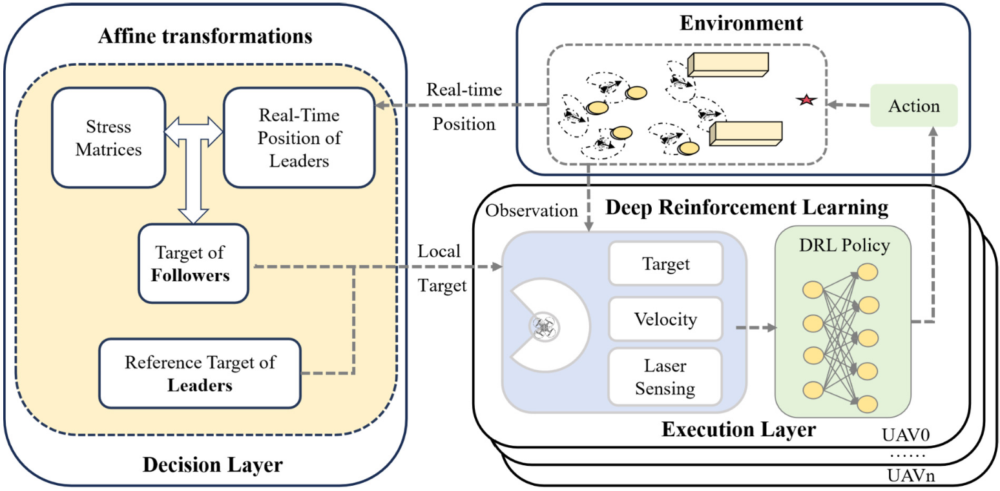

| Title | Flexible multi-UAV formation control via integrating deep reinforcement learning and affine transformations（融合深度强化学习与仿射变换的多无人机灵活编队控制） |
| Authors | Yunhao Liu（第一作者）、Guanzheng Wang、Chao Yan、Xiangke Wang、Zhiping Huang、Zhihong Liu（corresponding） |
| Affiliation | 国防科技大学（National University of Defense Technology）智能科学学院；南京航空航天大学（Nanjing University of Aeronautics and Astronautics）自动化学院 |
| Venue | Aerospace Science and Technology，2025年2月，Vol. 157，109812 |
| DOI / Links | 10.1016/j.ast.2024.109812 | Received: 2024-08-20 | Revised: 2024-11-24 | Accepted: 2024-12-01 | Published: 2024-12-05 |
| TL;DR | 提出一种模型-数据混合驱动的两层编队控制框架：决策层用仿射变换（affine transformations）和应力矩阵（stress matrices）保证编队结构的数学完整性（旋转、缩放、剪切、平移），执行层用 PPO-CNN 深度强化学习端到端输出速度指令实现避障与安全导航。两阶段课程学习加速训练收敛。在 STAGE 模拟器中与纯仿射编队、纯学习方法、ORCA 全面对比——本文方法在无碰撞前提下实现了最优的编队保持能力和运动平滑性，可扩展至 4~10 架 UAV。 |
| Inspiration Source | What Insight It Inspired | Type |
|---|---|---|
| Zhao (2018) 仿射编队控制理论——仿射变换保持共线性和比例关系，提供结构完整性的数学保证 | 编队结构的形状保持可以用仿射变换数学严格描述——不需要学习、不需要调参、数学上可证明。这是模型驱动部分的数学基础 | 数学 |
| 应力矩阵的 Leader-Follower 分块性质（Omega_ff 可逆时 follower 可由 leader 唯一确定） | 每个 follower 只需本地应力矩阵块 + leaders 位置即可独立计算目标——分布式计算的数学保证。这是"分布式算法"的理想形态：数学优雅 + 工程可行 | 架构 |
| PPO 在连续控制任务中的成功（Schulman et al. 2017）+ 课程学习在 RL 训练中的有效性（Bengio et al. 2009） | 避障和安全导航是难以建模的非结构化子问题，适合交给 DRL 数据驱动——且两阶段课程学习（无障碍到复杂障碍）可以大幅降低训练难度 | 方法 |
| Long et al. (2018) 的端到端 LiDAR-to-velocity 碰撞避免策略 | 从传感器数据直接映射到速度指令的端到端范式，将感知-规划-控制统一到一个神经网络中联合优化——消除模块间累积误差 | 策略 |
flowchart LR
subgraph IN["机载输入"]
LIDAR["LiDAR 三帧扫描"]
VEL["自身速度"]
end
subgraph DEC["决策层 · 模型驱动（本文创新）"]
AFF["仿射变换 A, b"]
STR["应力矩阵分块"]
TGT["各机目标点"]
end
subgraph EXE["执行层 · 数据驱动"]
NET["Conv1D + FC 策略"]
ACT["速度指令 v, ω"]
SIM["独轮车 + STAGE"]
end
AFF -->|"目标构型"| STR
STR -->|"分块求解"| TGT
TGT -->|"相对目标"| NET
LIDAR -->|"障碍距离"| NET
VEL -->|"速度反馈"| NET
NET -->|"动作"| ACT
ACT -->|"驱动"| SIM
classDef dec fill:#f0ebfd,stroke:#8b5cf6,stroke-width:2px,color:#6d28d9
classDef exe fill:#e8f0fe,stroke:#3b82f6,stroke-width:2px,color:#1d4ed8
classDef plant fill:#e6f7ee,stroke:#10b981,stroke-width:2px,color:#047857
class AFF,STR,TGT dec
class LIDAR,VEL,NET,ACT exe
class SIM plant
配色：紫色 = 模型驱动的决策层，蓝色 = 数据驱动的执行层（含其观测），绿色 = 被控对象与仿真器。本文的创新全在紫色这一层：它把编队结构写成作用在名义构型上的仿射变换（旋转 / 缩放 / 剪切 / 平移），再用应力矩阵的分块性质把"整个编队的目标形状"翻译成"每架 follower 自己的目标点"。这一步是纯线性代数——不需要训练、不需要中心节点、也不受障碍物数目影响。执行层（PPO-CNN）因此被解放出来，只干一件事：在目标点之间穿插避障。原本互相打架的"保持形状"与"别撞上"，被拆成两个各自可解的层。
flowchart LR
STR["应力分块"] -->|"预存子块"| TGT["编队目标点"]
TGT -->|"相对目标"| OBS["观测 o_i"]
LIDAR["LiDAR 三帧"] -->|"原始扫描"| OBS
OBS --> POL["策略 πθ"]
POL -->|"动作"| CMD["v_cmd, ω_cmd"]
CMD --> SIM["独轮车 + 障碍"]
SIM -->|"新状态"| REW["单步奖励"]
SIM -.->|"leader 位置"| TGT
SIM -.->|"下一帧"| LIDAR
REW --> PPO["PPO-KL 更新"]
PPO -.->|"更新 θ"| POL
classDef dec fill:#f0ebfd,stroke:#8b5cf6,stroke-width:2px,color:#6d28d9
classDef obs fill:#fef7ed,stroke:#f59e0b,stroke-width:2px,color:#92400e
classDef pol fill:#e8f0fe,stroke:#3b82f6,stroke-width:2px,color:#1d4ed8
classDef plant fill:#e6f7ee,stroke:#10b981,stroke-width:2px,color:#047857
classDef train fill:#ffeaf0,stroke:#f43f5e,stroke-width:2px,color:#be123c
class STR,TGT dec
class LIDAR,OBS obs
class POL,CMD pol
class SIM plant
class REW,PPO train
单步闭环里其实叠着三条回路。实线是控制回路：LiDAR 三帧（270° FOV、512 束、5 m 量程）+ 自身速度 [v, ω] + 决策层给的相对目标（极坐标下的距离与角度）拼成观测 o_i，策略输出速度指令，经独轮车运动学在 STAGE 中前进一步。虚线一是目标重算：每个控制步，follower 用预存的应力分块矩阵和当前 leader 位置重解一次自己的目标点——这是分布式计算，没有中心节点，规模扩大时通信量不增。虚线二是训练回路：单步奖励由到目标的进程奖励、碰撞惩罚与两项平滑惩罚相加，进 KL-penalty 版 PPO 更新，再把 θ 下发回策略。课程上分两段：Stage 1 无障碍环境（约 70k 次迭代把奖励推到 90 左右），Stage 2 加载该 checkpoint、学习率降到 2e-5，加入静态圆柱与动态障碍（KL_target = 15e-4），奖励继续爬到约 115。部署时只保留实线与虚线一——训练回路整体离线。
| Category | Content | Dimension / Range |
|---|---|---|
| Input | LiDAR 扫描（270度 FOV x 3帧连续扫描，每帧 512 距离值）+ 当前速度 [v_i, omega_i] + 相对目标位置（极坐标：距离 + 角度） | LiDAR: 3x512 距离值；速度: 2维；相对目标: 2维（极坐标） |
| Output | 速度指令 [v_cmd, omega_cmd]：线速度 v 和角速度 omega（UAV 体坐标系） | v in [0, 1.0] m/s, omega in [-1.0, 1.0] rad/s |
| Objective | 每架 UAV 追踪决策层给出的时变目标位置 p_i*(t)，同时避碰并保持编队结构完整性 | 飞行时间最短 + 零碰撞 + 编队误差最小 + 运动平滑 |
多无人机编队在复杂障碍环境（已知静态障碍物 + 未知静态障碍物 + 动态障碍物）中灵活飞行：编队需要整体旋转/缩放/剪切/平移以穿越狭窄通道或躲避动态威胁，同时保持编队结构的数学完整性（共线性、比例关系、应力平衡）。本质上是一个多智能体部分可观测马尔可夫决策过程（Multi-Agent POMDP）：CTDE 范式（集中式训练、分布式执行）——训练时共享经验池和全局 PPO 更新，推理时每架 UAV 完全独立决策。平台：STAGE 2D 模拟器，场景：静态/动态/复杂三种障碍物环境。
表头用英文，正文用中文
| Prior Method | Core Idea | Why It Fails |
|---|---|---|
| Affine Formation Control （Zhao 2018, 纯模型驱动） |
用仿射变换（旋转、缩放、剪切、平移）+ 应力矩阵定义编队的灵活构型约束——编队可以变形但保持共线性和比例关系 | 编队精度最高（位置误差 0.078m，相似性误差 0.00034），但完全不考虑避障——在静态障碍物场景中 50/50 次实验全部碰撞。数学模型没有"障碍物"概念——这是纯模型方法在复杂环境中的致命缺陷。 |
| Learning-based Formation （Bai et al. 2022, 纯数据驱动） |
用 DRL 端到端学习从观测到速度指令的映射，通过 Leader-Follower 相对位置偏移量定义编队约束 | 能避障（0/50 碰撞），但编队结构容易被破坏：静态场景相似性误差 0.047，复杂场景 0.078——均显著高于本文方法的 0.039 和 0.075。原因是相对位置约束过于刚性，在避障时缺乏灵活性。运动平滑性也较差（Avg Jerk 6.374~6.759 vs 本文 6.219~6.402）。 |
| ORCA (Optimal Reciprocal Collision Avoidance) （Van den Berg et al. 2011） |
基于速度障碍（Velocity Obstacle）的互惠避碰算法——每架 UAV 独立计算无碰撞速度 | 仅关心避碰，不关心编队结构。位置误差极大（2.9~3.7m），尤其在复杂场景中编队形状完全丢失（相似性误差 0.07~0.24）。ORCA-Fixed 策略完全不考虑编队约束；ORCA-varying 虽然引入了仿射变换调整目标，但与 ORCA 的可行解计算冲突——目标变化导致计算开销增大（~80ms vs ~9ms）。 |
| Optimization-based Methods （MPC 编队导航, Wen et al. 2024） |
将编队保持和碰撞避免纳入统一优化框架，通过求解带约束的最优控制问题同时处理编队和避障 | 需要将障碍物信息纳入优化框架——在实际应用中获取全局障碍物先验信息非常困难。且经典优化流程通常将整体任务拆分为多个独立优化的模块，各模块间的建模误差会累积（Chen et al. 2023），最终偏离整体编队控制目标。 |
本文的核心算法是一个两层混合驱动框架：决策层（模型驱动：仿射变换 + 应力矩阵）+ 执行层（数据驱动：PPO-CNN 端到端策略）。CTDE 范式：集中式训练（共享经验池 + 全局 PPO 更新），分布式执行（每架 UAV 独立通过 LiDAR 感知 + 策略网络推理）。两阶段课程学习加速训练：Stage 1 无障碍环境学习基本导航（~70k 迭代），Stage 2 复杂障碍环境 fine-tune。PPO 使用 KL-penalty 变体（非 clip 变体），自适应 KL 惩罚系数。
| Parameter | Value | Meaning | Selection Rationale |
|---|---|---|---|
| LiDAR FOV / Frames | 270 deg / 3 frames | 扫描角度范围 / 连续历史帧数 | 270度覆盖前方+两侧，保留90度后方盲区（依赖邻居间接感知）；3帧提供时序信息（感知动态障碍物的运动趋势） |
| LiDAR Rays / Max Range | 512 rays/frame / 5 m | 每帧扫描线数 / 最大检测距离 | 512点在角度分辨率（~0.53度）和计算量之间平衡；5m覆盖UAV安全制动距离 |
| Policy Network | 2xConv1D(32ch, k5s2/k3s1) + FC(256) + FC(128) + Actor/Critic | CNN分支提取LiDAR空间特征 -> FC(256)压缩 -> 拼接速度/目标 -> FC(128)融合 | 参考 Long et al. (2018) 的端到端碰撞避免网络架构，在 UAV 编队场景中调整为 4 隐藏层结构 |
| PPO gamma / lambda | 0.99 / 0.95 | 折扣因子 / GAE偏差-方差平衡参数 | 99%未来奖励计入当前决策——编队任务需要长视距规划；lambda=0.95是标准设置 |
| lr (Stage1 / Stage2) | 5e-5 / 2e-5 | 两阶段学习率递减 | Stage 2 降低学习率做精细调优，避免灾难性遗忘 |
| KL_target | 15e-4 | 自适应KL惩罚的目标散度 | 防止策略更新过大——多智能体训练比单智能体更不稳定 |
| T_horizon / K_epoch | 8000 / 20 | 每次更新前的收集步数 / 同批数据重复训练次数 | 多UAV场景需足够样本评估策略质量；20 epochs充分利用样本（UAV环境采样成本高） |
| r_safe / r_arrive | 0.5 m / +15 | 安全碰撞半径 / 到达目标奖励 | 考虑UAV尺寸和LiDAR精度；+15 vs -15形成对称二分信号 |
理解本文需要掌握三个关键基础原理：仿射变换（为什么能灵活变形而不散）、应力矩阵（如何实现分布式Leader-Follower框架）、PPO策略优化（如何在高维连续动作空间中稳定训练多智能体）。
仿射变换在编队控制中的核心价值在于它的"灵活但不散"特性。以 5 架 UAV 的 V 字形编队为例：标称构型定义了 V 字的角度和臂长比例，仿射变换允许领导者将 V 字（a）顺时针旋转 90 度（b）横向压缩穿越狭窄通道（c）纵向拉伸以加快行进速度（d）施加剪切变形以避开障碍物——但无论怎么变，V 字的三点共线性和两臂比例关系始终保持不变。这种"变形金刚"式的编队灵活性是非仿射方法（如固定 Leader-Follower 偏移）无法实现的。
变换类型：旋转（rotation）、各向异性缩放（anisotropic scaling，x/y方向独立缩放）、剪切（shear）、平移（translation）——总计 6 自由度（2D 场景）。
不变性保证：共线性（collinearity）和比例距离（ratio of distances）——这是"形状保持"的严格数学定义。
为什么需要各向异性缩放？：穿越狭窄水平通道时，编队需要在 y 方向压缩而不改变 x 方向的间距——各向同性缩放（uniform scaling）无法做到这一点。
变换类型：仅旋转 + 各向同性缩放（uniform scaling）+ 平移——总计 4 自由度。
不变性保证：角度（angles）和比例距离——比仿射变换更强的约束，但灵活性更差。
为什么不够？：各向同性缩放在 x 和 y 方向等比例变化——编队无法根据环境各向异性调整形状（如狭窄水平通道只需要 y 方向压缩），导致不必要的绕行。
为什么 Leader-Follower 分块是分布式计算的关键？
Actor-Critic 架构的原理分工：Actor（策略网络）输出动作分布 $a \sim \pi_\theta(\cdot \mid o)$——负责"做决策"；Critic（价值网络）输出 $V(o)$——负责"评价决策的好坏"。GAE（Generalized Advantage Estimation）用 Critic 的 TD 误差计算优势函数 $\hat{A}(o, a) = Q(o, a) - V(o)$，指导 Actor 的更新方向。这种"分工+合作"的架构使得训练比纯策略梯度方法（REINFORCE）高效得多。
课程学习为什么至关重要？：多 UAV 编队在复杂障碍物场景中的奖励信号极其稀疏——在到达目标之前，UAV 可能长时间接收不到有意义的正反馈信号，策略在此阶段容易陷入随机游走。课程学习将训练分为（1）无障碍环境学习基本导航和互碰避免——奖励信号密集（每步都能接近目标），策略快速收敛 ~70k 步；（2）用 Stage 1 的"基本功"初始化，在复杂环境中 fine-tune——"已经会走路了，现在只需要学避障"。Without_CL 实验证明了直接从复杂场景训练虽然也能收敛但最终性能显著更差。
论文原图截图。图片保存至 figures/ 子目录。命名 fig1.png ~ fig3.png 即可自动显示。

请将截图保存为figures/fig1.png本图展示了：(Fig. 1) UAV 的 2D LiDAR 感知模型——每架 UAV 配备 270 度视场角的激光扫描仪，提供 512 个距离值/帧，最大检测范围 5m。世界坐标系 (X_w, Y_w) 与机体坐标系 (X_b, Y_b) 的关系由航向角 psi 定义。(Fig. 2) 多 UAV 编队在复杂障碍环境中的任务示意图——已知障碍物（灰色棱柱，需通过编队缩放穿过的狭窄通道）和未知障碍物（黑色圆柱，随机静态 + 动态移动障碍物）混合存在。编队需要实时感知环境并灵活变换构型以安全通过。

请将截图保存为figures/fig2.png本图展示了：(Fig. 3) 整个两层混合驱动框架的架构总览。左侧决策层（Decision Layer）——标称编队 -> 仿射变换(A,b) -> 应力矩阵分块 -> 每架 UAV 的目标位置 p_i*(t)；右侧执行层（Execution Layer）——观测 = LiDAR + 速度 + 相对目标 -> 神经网络策略 -> 速度指令 -> 独轮车运动学。两层通过 p_i*(t) 连接：决策层的输出作为执行层的输入。(Fig. 6) 策略网络的详细结构——2 层 Conv1D（32 通道, k5s2/k3s1, ReLU）处理 3 帧 LiDAR 数据 -> FC(256)+ReLU -> 与速度 + 目标位置拼接 -> FC(128)+ReLU -> Actor 头（均值 + log标准差，v 用 sigmoid, omega 用 tanh，4维）和 Critic 头（V(o), 1维）。

请将截图保存为figures/fig3.png本图展示了：实验结果的核心发现。(Fig. 7) STAGE 训练环境——多 UAV + 随机生成圆柱障碍物（灰色），每轮随机初始化起止位置。(Fig. 8) 两阶段课程学习奖励曲线——Stage 1（无障碍）~70k 迭代收敛至 ~90，Stage 2（复杂障碍）用 Stage 1 checkpoint 初始化，快速收敛至 ~115；Without_CL 曲线（直接从复杂场景训练）虽然也收敛但最终奖励显著更低。(Fig. 10-13) 不同方法在静态/动态/复杂三种场景中的飞行轨迹——本文方法（Ours）保持编队最紧凑、路径最平滑；纯仿射编队（A-F）直接碰撞障碍物；纯学习方法（L-b）在避障时编队结构被拉散；ORCA 编队形状完全丢失。(Fig. 14-16) 可扩展性验证——5/6/10/15 架 UAV 编队的飞行轨迹，编队位置误差随规模增大而成比例增加（正常：累积误差），但平均位置误差和相似性误差保持稳定——证明方法的可扩展性。
| 数据问题 | 潜在困难 | 严重程度 |
|---|---|---|
| Leader UAV 故障 / 丢失（单点故障） | 若 leader 掉线，所有 follower 的 p_f*(t) 计算失效（Eq.(8) 依赖 p_l(t) 输入）——整个编队瞬时崩溃。这是 Leader-Follower 架构的致命弱点，在对抗环境或通信受限场景中尤为严重 | 致命 |
| LiDAR 噪声大 / 部分遮挡 | CNN 特征提取退化，障碍物漏检或误检——策略可能做出危险决策（看不见的障碍物导致碰撞）。270度 FOV 存在 90 度后方盲区，后方高速来障时完全无法感知 | 严重 |
| 分布偏移（训练 vs 测试环境差异大） | 障碍物形状/密度与训练集不同时，DRL 策略泛化能力不足——需要重新训练或 fine-tune。论文只在规则圆柱体障碍物场景中测试 | 严重 |
| 动态障碍物速度过快 / 行为复杂 | DRL 策略的反应时间受限于传感器频率和推理延迟——高速动态障碍物可能来不及规避。训练中只用了 UAV 间互碰作为动态障碍物信号，未专门设计复杂动态障碍物行为 | 中等 |
| 通信延迟 / 丢包 | 当前假设 leader 位置实时可用——若通信链路不稳定，followers 收到的 p_l 是过时的，在高速飞行中可能导致编队偏离预定形状甚至内部碰撞 | 中等 |
| 参考文献 | 为什么重要 |
|---|---|
| Zhao (2018) — Affine Formation Maneuver Control of Multiagent Systems. IEEE Trans. Autom. Control 63, 4140-4155 | 仿射编队控制的理论基础——定义了仿射变换在编队中的数学框架（包括应力矩阵、Leader-Follower 分块、仿射可定位性条件）。本文决策层的数学源头。必读。 |
| Long et al. (2018) — Towards Optimally Decentralized Multi-Robot Collision Avoidance via Deep Reinforcement Learning. ICRA | 端到端 LiDAR-to-velocity 碰撞避免策略的开创性工作——本文的网络结构和观测空间设计直接参考了此文。理解 PPO-CNN 在机器人避障中的设计范式。 |
| Schulman et al. (2017) — Proximal Policy Optimization Algorithms | PPO 原始论文——本文使用的 KL-penalty 变体和 clip 变体均出自此。理解两种变体的区别和适用场景（为什么本文选 KL-penalty 而非 clip）。 |
| Bai et al. (2022) — Learning-Based Multi-Robot Formation Control with Obstacle Avoidance. IEEE Trans. Intell. Transp. Syst. 23, 11811-11822 | 本文的关键 baseline——纯学习方法的编队控制。理解纯学习方法的局限（刚性相对位置约束导致编队灵活性不足），才能理解混合驱动的优势。 |
| Quan et al. (2023) — Robust and Efficient Trajectory Planning for Formation Flight in Dense Environments. IEEE Trans. Robot. 39, 4785-4804 | 编队相似性误差（Laplacian-based）的提出者——本文直接采用了该指标作为评估标准。理解该指标的尺度不变性证明（对旋转/平移/缩放不变），以及为什么它是评估"编队拓扑结构"的最纯粹指标。 |
对象：Liu et al. - 2025 - Flexible multi-UAV formation control...（Aerospace Science and Technology 157 (2025) 109812）正文第 4–9 页的全部 23 个编号公式（式 (1)–(23)）、第 4 页 算法 1、第 7 页 算法 2，以及方法核心但无编号的公式（GAE、PPO 损失、策略网络前向、POMDP 元组等，本文记为 补充式 (D1)–(D10)）。方法：本文不是复述论文文字，而是：
affine_demo.py（同目录）做「论文式号 ↔ 代码行号」交叉验证（见第 14 节对应表）；_derivation_work/flexible/verify_numbers.py（本工作区，可复跑）核算全部数值算例；| 公式 | 内容 | 核实结论 |
|---|---|---|
| (1)(2) | UAV 运动学模型 + 输入约束 | ⚠️ 数学正确；打印缺陷：第三分量 $\phi$ 缺导数点、输入向量印成 $[v,0,w]^T$（码点级证实）；$\omega$/$w$ 混用；单位未声明（$v_{max}=1$ m/s 由 §5.3 反推） |
| (3)(4) | 平衡应力条件与应力矩阵 | ✅ 正确；但应力对称定义印成 $\omega_{ij}=\omega_{ii}$（应为 $\omega_{ji}$，码点级证实） |
| (5) | 仿射变换下时变目标编队 | ✅ 正确；note 第 6 节把 Kronecker 顺序抄反（写成 $(A\otimes I_d)x$，在按节点堆叠约定下是错的），本文以论文为准 |
| (6)(7)(8) | 应力分块与 follower 目标位置 | ✅ 正确；由 $\bar\Omega P=0$ 分块解出，且本文证明式 (8) 恰为标称构型的仿射像（含 numpy 数值例） |
| (9)(10) | 随机策略与最小期望到达时间 | ✅ 标准 POMDP 记号；但 (10) 从不直接解，靠奖励 (16)–(20) 松弛（本文给出对应表） |
| (11)–(13) | 碰撞/到达约束 | ✅ 与式 (17)(18) 的 0.1 m 半径、$R_d$ 惩罚互补一致 |
| (14)(15) | 离散运动学 | ⚠️ 数学正确（式 (1) 的显式 Euler）；$\Delta t$ 未给值；位置更新用更新后 $\phi_t^i$（半隐式顺序未声明） |
| (16)–(19) | 奖励：目标/碰撞/角速度 | ⚠️ 设计正确；式 (17)(18) 范数分隔符不匹配（$|\cdot\|$、$\|\cdot|$，码点级证实）；式 (19) 在 $|\omega|=0.7$ 处有 $-0.07$ 小跳跃 |
| (20) | 航向角惩罚 | ⚠️ 设计正确；$H$ 及阈值 0.3 的单位未声明；$D$ 定义印成 $\|\|\cdot\|$；$r_a\propto1/d$ 在目标附近发散（被 0.1 m 切换截断） |
| (21) | Procrustes 位置误差 | ⚠️ 有闭式解；无 $1/n$（与 [35] 及 note 第 6 节不同，§5.5 文字证明论文用和形式）；只消除相似变换，不消除剪切 |
| (22) | Laplacian 相似性误差 | ⚠️ 数学正确；权重函数未指定；「缩放不变」对固定带宽高斯核仅近似成立（数值反证 0.0214≠0） |
| (23) | jerk | ✅ 定义式；离散化格式未给 |
| 算法 1 | 两层编队控制 | ⚠️ 逻辑正确；$g_i^*(t)$ 缺块下标；$D_f$ 与 $r$ 双符号混用 |
| 算法 2 | PPO（KL-penalty 变体） | ❌ 行 22 $L_V$ 负号疑似错误；行 18 $L_{PPO}(\phi)$ 笔误；GAE 的 $\delta$ 不随 $l$ 平移；行 14 缺对 $i$ 求和；$s_t^i$ 从未定义 |
| 网络结构 | 2×Conv1D+2×FC+sigmoid/tanh | ✅ 维度链 512→254→126→4032→260→128→2 自洽；激活函数与动作域匹配 |
| 总体 | 决策层（式 (3)–(8)） | ✅ 代数框架完全自洽（本文补两条一致性定理）；执行层（式 (9)–(20)、算法 2）多处印刷/记号缺陷，但设计逻辑可复原 |
核实手段声明：本模型无法目视 PNG 图像，改用更严格替代——从 PDF 原始字形层读字符、Unicode 码点与坐标（脚本 _derivation_work/flexible/extract_*.py）。下文「码点级证实」即指有字符级证据（如 $\phi$ 无 U+0307 点、U+2016 双竖线 vs U+007C 单竖线）。
论文原文（第 4 页 §3.1.2，按字形层逐字符核实，含打印原貌）：
| 符号 | 含义 | 单位（推断） | 文中取值 |
|---|---|---|---|
| $x,y$ | UAV 在世界系 $X_w$–$Y_w$ 的水平/垂直坐标（§3.1.1） | m | — |
| $\phi$ | 航向角（heading angle） | rad | — |
| $v$ | 机体系 $x_b$ 轴线速度指令 | m/s | $(0.0,1.0)$（§4.3.2；§5.3 明确最大速度 1 m/s） |
| $\omega$ | 机体系 $z$ 轴角速度指令（原文多处印成 $w$） | rad/s | $(-1.0,1.0)$（§4.3.2，隐含 $\omega_{max}=1$） |
| $v_{max},\omega_{max}$ | 输入幅值上限 | m/s, rad/s | 1, 1（由 §5.3/§4.3.2 反推） |
第 1 步：模型假设。这是 2D 平面内的独轮车（unicycle）模型：假设 UAV 质心速度为 $v$，方向始终沿机头方向（无侧滑约束——2D 下机体系 $y_b$ 方向速度恒为 0，这正是式 (1) 中输入向量第二个分量为 0 的原因）；航向角变化率即角速度：$\dot\phi=\omega$。
第 2 步：机体速度到世界速度。世界系 $X_w$–$Y_w$（水平-垂直坐标）与机体系 $x_b$–$y_b$ 相差航向角 $\phi$。机体速度向量 $[v,0]^T$ 旋转到世界系：
$$\begin{bmatrix}\dot x\\ \dot y\end{bmatrix}=\begin{bmatrix}\cos\phi&-\sin\phi\\ \sin\phi&\cos\phi\end{bmatrix}\begin{bmatrix}v\\ 0\end{bmatrix}=\begin{bmatrix}v\cos\phi\\ v\sin\phi\end{bmatrix},\qquad \dot\phi=\omega$$第 3 步：扩成 3×3 齐次形式。把第三个方程并入矩阵，即得式 (1)（按正确读法）：
$$\dot f=\begin{bmatrix}\dot x\\ \dot y\\ \dot\phi\end{bmatrix}=\begin{bmatrix}\cos\phi&-\sin\phi&0\\ \sin\phi&\cos\phi&0\\ 0&0&1\end{bmatrix}\begin{bmatrix}v\\ 0\\ \omega\end{bmatrix}$$逐分量核对：$\dot x=v\cos\phi-0\cdot\sin\phi+0\cdot\omega=v\cos\phi$ ✓；$\dot y=v\sin\phi$ ✓；$\dot\phi=0+0+1\cdot\omega=\omega$ ✓。注意中间一列 $(-\sin\phi,\cos\phi,0)^T$ 在本题中永远乘 0——它是为形式完整保留的（若未来引入侧向速度 $v_y$ 才起作用）。
式 (14)(15)（见第 6 节）是把式 (1) 用显式 Euler 离散：$p_t^i=p_t^{t-1}+\Delta t\,v_t^i[\cos\phi_t^i,\sin\phi_t^i]^T$，$\phi_t^i=\phi_t^{t-1}+\Delta t\,\omega_t^i$。除以 $\Delta t$ 取 $\Delta t\to0$ 极限即回到 $\dot p=v[\cos\phi,\sin\phi]^T$、$\dot\phi=\omega$ ✓ 与式 (1) 一致。一个细节：位置更新用的是更新后的 $\phi_t^i$（半隐式/辛 Euler 顺序：先转航向、再位移）。标准显式 Euler 应为 $\phi_{t-1}$。两者只差 $O(\Delta t^2)$，但实现顺序不同会带来轻微差别——论文未声明采用哪种顺序，实现者需注意（问题清单 #11）。
论文原文（第 4 页 §4.2.2）：
| 符号 | 含义 | 备注 |
|---|---|---|
| $\mathcal G=(\mathcal V,\mathcal E)$ | 无向通信图；$\mathcal V=\{1,\dots,n\}$，$\mathcal E\subseteq\mathcal V\times\mathcal V$；$(i,j)\in\mathcal E\Leftrightarrow(j,i)\in\mathcal E$ | §4.2.1 |
| $\mathcal N_i$ | 节点 $i$ 的邻居集 $\mathcal N_i=\{j\in\mathcal V:(i,j)\in\mathcal E\}$ | §4.2.1 |
| $\omega_{ij}$ | 边 $(i,j)$ 上的应力标量，$\omega_{ij}=\omega_{ji}\in\mathbb R$，可正可负可为零 | 无单位（图论量） |
| $\Omega$ | 应力矩阵：类拉普拉斯结构，行和为零 | 式 (4) |
| $P$ | 当前编队构型（$dn$ 维列向量） | 式 (3) |
第 1 步：平衡应力的标量定义。论文原话：应力 $\{\omega_{ij}\}_{(i,j)\in\mathcal E}$ 称为平衡应力（equilibrium stress），当且仅当对每个 $i$：
$$\sum_{j\in\mathcal N_i}\omega_{ij}\,(p_j-p_i)=0 \qquad (\text{未编号，物理意义：节点 }i\text{ 受到的“虚拟合力”为零})$$这正是弹簧网络平衡条件：把 $\omega_{ij}(p_j-p_i)$ 看成边 $(i,j)$ 对节点 $i$ 的"拉力"（$\omega_{ij}>0$ 时该边试图把 $i$ 拉向 $j$——吸引力；$\omega_{ij}<0$ 时推离——排斥力；下文 §4.2.2 原话正是这个解释）。注意 $\omega_{ij}=\omega_{ji}$（对称）是必须的：作用-反作用要求边对两端点的力大小相等方向相反，$\omega_{ij}(p_j-p_i)$ 与 $\omega_{ji}(p_i-p_j)$ 要互消，只有 $\omega_{ij}=\omega_{ji}$ 才能让"边内力"自洽；且只有对称时才存在由势能 $\frac12\sum_{(i,j)}\omega_{ij}\|p_i-p_j\|^2$ 导出的守恒解释。
第 2 步：写成矩阵。取式 (4) 的 $\Omega$（对角元为 $\mathcal N_i$ 上应力之和、非对角元为 $-\omega_{ij}$）。对每个节点 $i$：
$$\begin{aligned} \big[(\Omega\otimes I_d)P\big]_{i\text{块}}&=\sum_{j=1}^{n}[\Omega]_{ij}\,p_j=[\Omega]_{ii}p_i+\sum_{j\in\mathcal N_i}[\Omega]_{ij}p_j\\ &=\Big(\sum_{k\in\mathcal N_i}\omega_{ik}\Big)p_i-\sum_{j\in\mathcal N_i}\omega_{ij}\,p_j=\sum_{j\in\mathcal N_i}\omega_{ij}(p_i-p_j)=-\sum_{j\in\mathcal N_i}\omega_{ij}(p_j-p_i) \end{aligned}$$于是「对所有 $i$，$\sum_j\omega_{ij}(p_j-p_i)=0$」⟺「$(\Omega\otimes I_d)P=\mathbf 0$」 ✓ 与式 (3) 完全一致。关键代数细节：$(\Omega\otimes I_d)$ 是 $dn\times dn$ 的分块矩阵，其 $(i,j)$ 块是标量 $[\Omega]_{ij}$ 乘 $I_d$；因为 $P$ 按节点堆叠，乘积的第 $i$ 块恰好是 $\sum_j[\Omega]_{ij}p_j$。若 $P$ 按坐标堆叠（所有 $x$ 在前、所有 $y$ 在后），则必须写成 $(I_d\otimes\Omega)P=0$——Kronecker 顺序完全由堆叠约定决定，这是读懂本节（以及后文第 5 节的矛盾点）的钥匙。
性质 A：行和为零。对任意 $i$：$\sum_{j=1}^n[\Omega]_{ij}=\sum_{k\in\mathcal N_i}\omega_{ik}-\sum_{j\in\mathcal N_i}\omega_{ij}=0$，即 $\Omega\,\mathbf 1_n=\mathbf 0$。
性质 B：平移不变性。若 $P$ 满足式 (3)，则对任意 $b\in\mathbb R^d$：
$$(\Omega\otimes I_d)(P+\mathbf 1_n\otimes b)=(\Omega\otimes I_d)P+\underbrace{(\Omega\mathbf 1_n)\otimes(I_d\, b)}_{=0}=0$$即把整个编队整体平移 $b$ 仍是平衡构型——平衡应力约束不钉死绝对位置，只约束相对位置。这正是仿射编队能"整体飞行"的根源，也是下一节式 (5) 中平移项 $\mathbf 1_n\otimes b(t)$ 的合法性所在。
为什么叫"应力"矩阵？$\Omega$ 与图拉普拉斯 $L=D-A$ 结构相同，只是边权允许为负（负权 = 排斥力，让编队"撑开"）。Zhao 2018 [14] 的核心结论：存在由标称构型 $r$ 设计的 $\Omega$ 使 $r$ 全局刚性/仿射可定位，本文直接引用该框架。
论文原文（第 5 页 §4.2.3）：
Kronecker 积的分块结构 $(I_n\otimes A)$ 是块对角矩阵 $\mathrm{diag}(A,A,\dots,A)$，作用在按节点堆叠的 $r$ 上：
$$P^*(t)=\begin{bmatrix}A&0&\cdots&0\\ 0&A&\cdots&0\\ \vdots&\vdots&\ddots&\vdots\\ 0&0&\cdots&A\end{bmatrix}\begin{bmatrix}r_1\\ r_2\\ \vdots\\ r_n\end{bmatrix}+\begin{bmatrix}b\\ b\\ \vdots\\ b\end{bmatrix}\quad\Longrightarrow\quad p_i^*(t)=A(t)\,r_i+b(t),\quad i=1,\dots,n$$即每一架 UAV 的目标位置都由同一个仿射映射生成：$p_i^*=\mathcal A(r_i)$，$\mathcal A(x)=Ax+b$。这就是"仿射编队"的全部含义——全体成员共享同一个 $(A,b)$。
与既有笔记的核对（必须纠正）：note.html 第 6 节 Group A 与 note.md L21 把式 (5) 写成 $x'(t)=(A(t)\otimes I_d)\cdot x+[\mathbf 1_N\otimes I_d]\cdot b(t)$。这个 Kronecker 顺序在论文的堆叠约定下是错的：$(A\otimes I_d)$ 是 $d\times d$ 分块、每块 $n\times n$ 的矩阵，它作用在按坐标堆叠的向量上才是对的；而论文的 $P$ 明确按节点堆叠（§4.2.1 定义 $P=[p_1^T,\dots,p_n^T]^T$），所以必须用 $(I_n\otimes A)$。平移项 $[\mathbf 1_N\otimes I_d]b=\mathbf 1_N\otimes b$ 恰好等价，这一半没错。本文以 PDF 字形层核实的论文原式为唯一标准。
二维仿射变换全体构成群 $\mathrm{Aff}(2)$：复合律 $(A_2,b_2)\circ(A_1,b_1)=(A_2A_1,\ A_2b_1+b_2)$，逆 $(A^{-1},-A^{-1}b)$，单位元 $(I_2,0)$。图 5 展示的六种变换一一对应（矩阵形式即 affine_demo.py 的 rotation_matrix/scaling_matrix/shear_matrix，见第 14 节）：
| Fig. 5 | 变换 | $A$ | $b$ | demo 代码 |
|---|---|---|---|---|
| (a) | 标称 | $I_2$ | $0$ | L147-151 |
| (b) | 旋转 $\theta$ | $R(\theta)=\begin{bmatrix}\cos\theta&-\sin\theta\\ \sin\theta&\cos\theta\end{bmatrix}$ | $0$ | L152-156 |
| (c) | 缩放（可非均匀） | $\mathrm{diag}(s_x,s_y)$ | $0$ | L157-161 |
| (d)(e) | 剪切 | $\begin{bmatrix}1&h_x\\ 0&1\end{bmatrix}$、$\begin{bmatrix}1&0\\ h_y&1\end{bmatrix}$（demo 用 $\begin{bmatrix}1&h_x\\ h_y&1\end{bmatrix}$ 双剪） | $0$ | L162-171 |
| (f) | 综合 | $R(\pi/6)\,\mathrm{diag}(0.6,0.8)\,\mathrm{Shear}(0.3,0)$ | $(3,2)$ | L172-176 |
分解定理：任意 $A$ 由极分解 $A=RU$（$R\in O(2)$，$U\succeq 0$ 对称）唯一写成「旋转×拉伸」；$U$ 再谱分解为沿主轴的各向异性缩放。所以旋转/缩放/剪切不是三种并列操作，而是任意线性映射的三种"基元"。$A$ 有 4 个自由度、$b$ 有 2 个，共 6 个——2D 仿射群是 6 维的。
设标称构型 $r$ 满足 $(\Omega\otimes I_d)r=0$（$\Omega$ 由 $r$ 设计，这是 Zhao 2018 的起点）。对式 (5) 的 $P^*(t)$：
$$\begin{aligned} (\Omega\otimes I_d)P^*(t)&=(\Omega\otimes I_d)(I_n\otimes A)\,r+(\Omega\otimes I_d)(\mathbf 1_n\otimes b)\\ &=(\Omega\otimes A)\,r+\underbrace{(\Omega\mathbf 1_n)\otimes b}_{=0\ (\text{性质 A})}\\ &=(\Omega\otimes I_d)\,(I_n\otimes A)\,r \end{aligned}$$（第二步用到混合积性质 $(\Omega\otimes I_d)(I_n\otimes A)=\Omega\otimes A$。）要让它为 0，注意 $(I_n\otimes A)r$ 是"逐节点左乘 $A$"后的构型，一般不是 $\Omega$ 的平衡构型，所以 $(\Omega\otimes I_d)P^*\ne 0$ 一般成立——除非我们把"平衡"换成"仿射等价"：
$$(\Omega\otimes A)\,r\overset{?}{=}0$$由于 $(\Omega\otimes A)=(\Omega\otimes I_d)(I_n\otimes A)=(I_n\otimes A)(\Omega\otimes I_d)$（两边都等于 $\Omega\otimes A$，交换律在此成立），故
$$(\Omega\otimes A)\,r=(I_n\otimes A)\,\underbrace{(\Omega\otimes I_d)\,r}_{=0}=0$$✓ 结论：$(\Omega\otimes A)r=0$ 恒成立，即 $P^*(t)$ 在"被 $A^{-1}$ 拉回"后仍是 $\Omega$ 的平衡构型；或者说仿射变换把平衡构型映到平衡构型（在应力矩阵同步左乘 $A$ 的意义下）。这正是"编队可以任意旋转/缩放/剪切/平移而结构关系不变"的代数本质：边向量 $p_j^*-p_i^*=A(r_j-r_i)$ 与标称边向量 $r_j-r_i$ 只差同一个线性映射，所有共线关系、平行关系、线段比例都保持（仿射保持重心坐标），队形"形状的骨架"不散。
取 demo create_formation('diamond')（L55-65）的 5 机菱形（scale=2）：
取 Fig. 5(c) 型非均匀缩放 $A=\mathrm{diag}(0.5,0.7)$、$b=0$：
$$P^*=\begin{cases}p_1^*=(0,0)\\ p_2^*=(1.0,0)\\ p_3^*=(-1.0,0)\\ p_4^*=(0,1.4)\\ p_5^*=(0,-1.4)\end{cases}$$横轴方向从 $\pm2$ 缩到 $\pm1$、纵轴从 $\pm2$ 缩到 $\pm1.4$——正好对应 demo 的 scaling_matrix(0.5,0.7)（L157-161）与 Fig. 5(c)。再验证共线性保持：标称中 $r_1,r_2,r_4$ 不成一线，但 $r_2,r_1,r_3$ 共线且 $r_1$ 是中点；变换后 $p_2^*,p_1^*,p_3^*$ 仍共线且 $p_1^*$ 仍是中点（$0=(1+(-1))/2$）✓。中点在仿射下仍为中点，这是重心坐标不变性最简单的实例。
直觉一句话：式 (5) 回答的是"编队应该在哪里"——它是决策层输出的目标，不是约束。仿射变换的"刚性"体现在目标形状上；而实际飞行路径由执行层 DRL 自由决定（可以绕开障碍物、暂时偏离目标）。affine_demo.py 的 demo_avoidance_principle()（L718-891）正是把这一点画成了图："Affine transformation is the TARGET, not the CONSTRAINT"。
论文原文（第 6 页）：
把 $\Omega$ 按前 $n_l$ 行/列分块 $\Omega=\begin{bmatrix}\Omega_{ll}&\Omega_{lf}\\ \Omega_{fl}&\Omega_{ff}\end{bmatrix}$（leader 在前、follower 在后，与 $P_l=[p_1^T,\dots,p_{n_l}^T]^T$、$P_f=[p_{n_l+1}^T,\dots,p_n^T]^T$ 的排序一致），则
$$\bar\Omega_{ll}=\Omega_{ll}\otimes I_d\in\mathbb R^{n_l d\times n_l d},\qquad \bar\Omega_{fl}=\Omega_{fl}\otimes I_d\in\mathbb R^{n_f d\times n_l d},\quad \text{等}$$维数全部与论文一致 ✓。由式 (3) 立得论文原话「Obviously, $\bar\Omega P=0$ is obtained from Eq. (3)」——即
$$\bar\Omega P=\begin{bmatrix}\bar\Omega_{ll}&\bar\Omega_{lf}\\ \bar\Omega_{fl}&\bar\Omega_{ff}\end{bmatrix}\begin{bmatrix}P_l\\ P_f\end{bmatrix}=\begin{bmatrix}\bar\Omega_{ll}P_l+\bar\Omega_{lf}P_f\\ \bar\Omega_{fl}P_l+\bar\Omega_{ff}P_f\end{bmatrix}=\mathbf 0 \tag{D1}$$这是下一节式 (8) 的全部准备。
记号提示：$\bar\Omega$（bar 版）是 $dn\times dn$ 的"全维"应力矩阵；分块记号 $\bar\Omega_{fl}$ 是 $\bar\Omega$ 的第 (f,l) 块，不是 $\Omega_{fl}$ 本身加 bar 之后再做 Kronecker——虽然数值上 $\bar\Omega_{fl}=\Omega_{fl}\otimes I_d$ 恰好成立，两者一致，不必纠结。
论文原文（第 6 页）：
第 1 步：从式 (D1) 的 follower 块行解出 $P_f$。第二行：$\bar\Omega_{fl}P_l+\bar\Omega_{ff}P_f=0$。两边左乘 $\bar\Omega_{ff}^{-1}$ 并移项：
$$P_f=-\bar\Omega_{ff}^{-1}\bar\Omega_{fl}\,P_l$$✓ 与式 (8) 一致（$P_f$ 换成目标记号 $P_f^*(t)$）。这就是全部推导——式 (8) 不是新原理，而是平衡条件式 (3) 对 follower 分块后的代数解。
第 2 步：可逆性条件（论文只引 [14] 未展开，这里补全）。$\bar\Omega_{ff}=\Omega_{ff}\otimes I_d$ 非奇异 ⟺ $\Omega_{ff}$ 非奇异。Zhao 2018 [14] 的条件：编队 $(G,r)$ 需是仿射可定位的，其充分条件包括（$d=2$ 时）leader 数 $n_l\ge d+1=3$ 且 leaders 仿射张成 $\mathbb R^2$（不共线），并要求 $r$ 关于 $\Omega$ 是平衡构型且 $\Omega_{ff}$ 非奇异（还有全局刚性条件，细节见 [14] Theorem 3）。为什么至少 3 个 leader：2D 仿射有 6 个自由度，2 个 leader 只给 4 个位置数，不足以确定 $(A,b)$——下一节 §5.3 用行列式给出精确论证。
设 leaders 由仿射变换驱动：$P_l(t)=(I_{n_l}\otimes A)r_l+\mathbf 1_{n_l}\otimes b$。代入式 (8)：
$$-\bar\Omega_{ff}^{-1}\bar\Omega_{fl}P_l=-\bar\Omega_{ff}^{-1}\bar\Omega_{fl}\big[(I_{n_l}\otimes A)r_l+\mathbf 1_{n_l}\otimes b\big]$$平移部分：利用行和为零的块形式 $\Omega_{fl}\mathbf 1_{n_l}=-\Omega_{ff}\mathbf 1_{n_f}$（由 $\Omega\mathbf 1_n=0$ 的下半块）：
$$-\bar\Omega_{ff}^{-1}\bar\Omega_{fl}(\mathbf 1_{n_l}\otimes b)=-\bar\Omega_{ff}^{-1}\big[(\Omega_{fl}\mathbf 1_{n_l})\otimes b\big]=-\bar\Omega_{ff}^{-1}\big[(-\Omega_{ff}\mathbf 1_{n_f})\otimes b\big]=\bar\Omega_{ff}^{-1}\bar\Omega_{ff}(\mathbf 1_{n_f}\otimes b)=\mathbf 1_{n_f}\otimes b$$线性部分：利用 $\bar\Omega r=0$ 的 follower 块 $\bar\Omega_{fl}r_l=-\bar\Omega_{ff}r_f$，以及 $(I_{n_f}\otimes A)$ 与 $\bar\Omega_{ff}$ 可交换（$(\Omega_{ff}\otimes I_d)(I_{n_f}\otimes A)=\Omega_{ff}\otimes A=(I_{n_f}\otimes A)(\Omega_{ff}\otimes I_d)$）：
$$\begin{aligned} -\bar\Omega_{ff}^{-1}\bar\Omega_{fl}(I_{n_l}\otimes A)r_l &=-\bar\Omega_{ff}^{-1}(\Omega_{fl}\otimes A)r_l =-\bar\Omega_{ff}^{-1}(I_{n_f}\otimes A)(\Omega_{fl}\otimes I_d)r_l\\ &=-(I_{n_f}\otimes A)\bar\Omega_{ff}^{-1}\bar\Omega_{fl}r_l =(I_{n_f}\otimes A)\,r_f \end{aligned}$$两段相加：
$$-\bar\Omega_{ff}^{-1}\bar\Omega_{fl}P_l(t)=(I_{n_f}\otimes A)r_f+\mathbf 1_{n_f}\otimes b \equiv P_f^*(t)\quad(\text{式 (5) 的 follower 块})$$✓✓ 结论：只要 leaders 按仿射变换飞行、标称构型是 $\Omega$ 的平衡构型，则式 (8) 计算出的 follower 目标精确等于标称构型的仿射像——决策层的两部分（式 (5) 的全局仿射、式 (8) 的分布式计算）在数学上完全等价。这是本文分布式架构自洽性的核心证据，论文只用文字说"one-to-one correspondence"，本文把代数补全。
当 leaders 按 $p_{li}=Ar_{li}+b$ 运动时，用差消去 $b$：
$$p_{li}-p_{l1}=A(r_{li}-r_{l1}),\quad i=2,\dots,n_l$$拼成 $d\times(n_l-1)$ 矩阵 $\Delta P=[p_{l2}-p_{l1},\dots]$、$\Delta R=[r_{l2}-r_{l1},\dots]$，则 $A\,\Delta R=\Delta P$。当 $n_l-1\ge d$ 且 $\Delta R$ 行满秩（leaders 仿射张成 $\mathbb R^d$）时：
$$A=\Delta P\,\Delta R^T(\Delta R\,\Delta R^T)^{-1}\ \ (\text{最小二乘}),\qquad b=p_{l1}-Ar_{l1}$$$d=2$、$n_l=3$ 时 $\Delta R$ 是 $2\times2$，$A=\Delta P\,\Delta R^{-1}$ 唯一。若只有 2 个 leader（affine_demo.py 的情形，见第 14 节），$\Delta R$ 是 $2\times1$，只能确定 $A$ 在 span 方向上的作用——这正是 demo 必须"假设无剪切、A=sR"的原因，与论文理论条件 $n_l\ge d+1$ 的差距详见问题清单 #15。
构造 $n=4$、$d=2$：标称 $r_1=(0,0)$、$r_2=(2,0)$、$r_3=(1,2)$、$r_4=(1,\tfrac23)$（follower 4 恰为三 leader 的质心）。取应力 $\omega_{4j}=1\ (j=1,2,3)$、$\omega_{12}=\omega_{13}=\omega_{23}=-\tfrac13$（读者可代回 §2.2 标量式验证 $(\Omega\otimes I_2)r=0$，numpy 输出 8 个零 ✓）。此时
$$\Omega=\begin{bmatrix}1/3&1/3&1/3&-1\\ 1/3&1/3&1/3&-1\\ 1/3&1/3&1/3&-1\\ -1&-1&-1&3\end{bmatrix},\qquad \Omega_{ff}=[3],\quad \Omega_{fl}=[-1,-1,-1]$$式 (8)：$P_f^*=-\tfrac13(-p_1-p_2-p_3)\otimes I_2=\tfrac13(p_1+p_2+p_3)$——follower 目标 = 三 leader 位置的质心。几何直觉：应力结构把 follower"锁"在质心，无论 leaders 怎么飞（旋转/缩放/剪切/平移），式 (8) 自动输出新质心。
取 $A=R(30^\circ)\,\mathrm{diag}(0.5,1)=\begin{bmatrix}0.4330&-0.5\\ 0.25&0.8660\end{bmatrix}$、$b=(3,2)$：leaders 飞到
$$p_1^*=(3,2),\quad p_2^*=(3.8660,2.5),\quad p_3^*=(2.4330,3.9821)$$式 (8) 输出 $P_f^*=\tfrac13(p_1^*+p_2^*+p_3^*)=(3.0997,2.8273)$，而直接算仿射像 $Ar_4+b=(3.0997,2.8273)$——两者逐位相同 ✓（numpy：Eq(8) follower target under affine == A r4 + b）。再用 §5.3 反解：$\Delta P\,\Delta R^{-1}$ 精确恢复 $A$、$b=(3,2)$ ✓。这组数字同时验证了式 (5)、(8)、§5.3 三处公式与 §5.2 的一致性定理。
论文原文（第 6 页 §4.3）：
论文原话：POMDP 是六元组 $(\mathcal S,\mathcal A,\mathcal T,\mathcal R,\Omega,\mathcal O)$：状态空间、动作空间、状态转移模型、奖励函数、观测集合（$o\in\Omega$）与状态-观测映射（$o\sim\mathcal O(s)$）。本文的实例化：
| 分量 | 本文实例化 | 出处 |
|---|---|---|
| $\mathcal S$ | 含 $(p_t^i,\phi_t^i)$、$g_t^i$、$B_k$、邻居 $p_t^j$ 等（论文从未明确定义 $s_t^i$，但算法 2 又用 $V_\phi(s_t^i)$——问题清单 #8） | §4.3 |
| $\mathcal A$ | $a_t^i=[v_t^i,\omega_t^i]$，$v_t^i\in(0,1)$、$\omega_t^i\in(-1,1)$（机体系，单位推断 m/s、rad/s） | §4.3.2 |
| $\mathcal T$ | 不显式建模——model-free：由 STAGE 仿真器按式 (14)(15) 演进 | §4.3 |
| $\mathcal R$ | 式 (16)–(20)，见第 7 节 | §4.3.3 |
| $\Omega$ | $o_t^i=(o_{t,z}^i,o_{t,g}^i,o_{t,v}^i)$：LiDAR 三帧 $3\times512$ + 目标极坐标 + 当前动作 | §4.3.1 |
| $\mathcal O$ | LiDAR 只给 270° 视场内距离值——部分可观测的根源（身后 90° 盲区 + 探测距离 5 m 上限） | §3.1.1/§4.3.1 |
第 1 步：式 (14)(15) 是式 (1) 的显式 Euler 离散。式 (14) 除以 $\Delta t$ 取极限即 $\dot p=v[\cos\phi,\sin\phi]^T$，与式 (1) 一致 ✓；式 (15) 给出 $\dot\phi=\omega$ ✓。注意式 (14) 用更新后的 $\phi_t^i$（半隐式顺序，问题清单 #11）。
第 2 步：式 (10) 是声明式目标，论文从不直接解它。$\mathbb E(t_g\mid\pi_\theta)$ 是随机停止时间，直接优化需转移模型或稀疏梯度，论文两者皆无。实际做法是换成 PPO 最大化奖励（算法 2），奖励 (16)–(20) 是 (10)–(12) 的拉格朗日式松弛：
| 式 (10)–(13) 的目标/约束 | 奖励对应项 | 对应关系 |
|---|---|---|
| $\min t_g$（尽快到达） | 式 (17) 过程奖励 $\omega_g(\|p_{t-1}^i-g_t^i\|-\|p_t^i-g_t^i\|)$ | 距离缩减量 ≈ 到达时间导数（势函数成形，见 §7.3） |
| 式 (11)(12) 碰撞约束 | 式 (18) 碰撞惩罚 $r_c=-15$ | 硬约束罚函数化 |
| 式 (13) 到达条件 | 式 (17) 到达奖励 $r_a=+15$（$\|p_t^i-g_t^i\|<0.1$ 时） | 终止条件 + 稀疏奖 |
| 式 (14)(15) 运动学 | 仿真器强制执行（动作经 sigmoid/tanh 压缩进 $(0,1)\times(-1,1)$） | 可行域约束 |
论文原文（第 6–7 页 §4.3.3，按字形层核实，含打印原貌）：
| 参数 | 值 | 含义 | 单位 |
|---|---|---|---|
| $r_a$ | $+15$ | 到达目标奖励 | 无量纲 |
| $r_c$ | $-15$ | 碰撞惩罚（与 $r_a$ 对称） | 无量纲 |
| $R_d$ | $0.5$ m | 安全半径（UAV 间与 UAV-障碍共用） | m |
| $\omega_g$ | $2.5$ | 距离缩减奖励权重 | 奖励/m |
| $\omega_w$ | $-0.1$ | 角速度惩罚权重 | 奖励/(rad/s) |
| $\omega_d$ | $0.1$ | $D$ 的系数（距离权重） | 1/m |
| 阈值 0.1 m / 0.7 / 0.3 | — | 到达半径 / 角速度阈值 / 航向角阈值 | m / rad/s（推断）/ rad（推断） |
$r_{t,g}^i$（式 17）——势函数成形。过程奖励是势函数 $\Phi(p)=\omega_g\|p-g_t^i\|$ 的一步下降量 $\omega_g[\Phi(p_{t-1})-\Phi(p_t)]$。势成形的已知性质：势部分沿轨迹求和只差端点值（$\sum_t[\Phi(p_{t-1})-\Phi(p_t)]=\Phi(p_0)-\Phi(p_T)$），不会扭曲最优策略，只提供稠密的"前进方向"梯度。到达奖 $+15$ 是 0.1 m 判定圆内的稀疏终止奖励。
$r_{t,c}^i$（式 18）——罚函数化。触发条件 $<R_d$ 与式 (11)(12) 的 $\ge R_d$ 恰好互补；$r_c=-15$ 与 $r_a=+15$ 形成对称二分信号。论文未说明碰撞后是否终止 episode（STAGE 场景下通常即任务失败）。
$r_{t,w}^i$（式 19）——抑制急转。$|\omega|>0.7$ 时线性罚 $-0.1|\omega|$：$\omega=1$ 时 $-0.1$、$\omega=0.71$ 时 $-0.071$、$\omega=0.69$ 时 $0$——分段点有 $0.07$ 跳变（不连续但只进期望估计，实际无碍）。
$r_{t,a}^i$（式 20）——航向对齐 + 距离反比缩放。$H<0.3$（约 17.2°）给正奖 $(0.3-H)/D$，否则罚 $-0.1H/D$。除以 $D=\omega_d\|p-g\|$ 的动机（论文原话）：消除轨迹长度对惩罚累计的影响——远时罚轻（允许绕路）、近时罚重（强制对准）。
示例 1（单步，假设 $\Delta t=0.1$ s）：UAV 距目标 2.0 m、一步走 0.1 m（$v=1$）、$H=0.2$、$\omega=0.5$：
$$r_{g}=2.5\times(2.0-1.9)=0.25,\qquad r_{w}=0\ (|\omega|<0.7),\qquad r_{a}=\frac{0.3-0.2}{0.1\times1.9}=0.5263\quad\Rightarrow\quad r=0.7763$$示例 2（尺度对比，暴露设计权衡）：过程奖励每步上限 $\omega_g v_{max}\Delta t=2.5\times0.1=0.25$；而 $r_a$ 在 $H=0$、$d=1$ m 时达 $0.3/0.1=3.0$——航向奖励可达过程奖励的 12 倍：近距离处"对准目标"压倒"往前走"，策略被强烈拉向对准方向（有意为之，抑制 zigzag）。代价：$r_a\propto1/d$ 在 $d\to0$ 发散（被 0.1 m 处切换 $+15$ 截断）；$d=0.1$ m 时 $r_a$ 上限 $0.3/0.01=30$——到达奖的两倍，此处奖励梯度极陡，训练稳定性风险论文未讨论。
示例 3（episode 尺度自洽）：§5.1.2 报告收敛后平均奖励约 90（阶段一）/115（阶段二）。量级核对：$N=5$ 全部到达 $5\times15=75$，加全程势成形（初始距目标 3 m 时约 $2.5\times3=7.5$/架）与航向奖励，每架 15+几，合计 90–115 完全合理 ✓。论文报告的收敛奖励与式 (16)–(20) 的参数尺度自洽。
卷积输出长度 $L_{out}=\lfloor(L-k)/s\rfloor+1$：
| 层 | 规格 | 维度核算 |
|---|---|---|
| 输入 | 三帧 LiDAR | $3\times512$ |
| 隐藏层 1 | 1D 卷积 32 滤波器、k=5、s=2 + ReLU | $32\times\lfloor(512-5)/2\rfloor+1=32\times254$ |
| 隐藏层 2 | 1D 卷积 32 滤波器、k=3、s=2 + ReLU | $32\times\lfloor(254-3)/2\rfloor+1=32\times126$ |
| 展平 + 全连接 3 | FC 256 + ReLU | $32\times126=4032\to256$ |
| 拼接 | 第三层输出 $\oplus\ o_{t,g}^i\oplus o_{t,v}^i$ | $256+2+2=260$ |
| 全连接 4 | FC 128 + ReLU | $260\to128$ |
| 输出层 | 2 单元：sigmoid（$v$）+ tanh（$\omega$） | $128\to2$ |
一处必须澄清的歧义：论文原话「The output of the third layer is connected to the other two inputs ($o_{t,g}^i$ and $o_{t,v}^i$) and fed into the last hidden layer」——拼接发生在FC256 之后、FC128 之前（$260\to128$），上表按此实现。第 6 节笔记表「k5s2/k3s1」的第二卷积步长应为 s2（论文 span=2），顺带修正。
论文原文（第 7 页 Algorithm 2；行 18 的 $L_{PPO}(\phi)$ 与行 22 的负号均为打印原貌，码点级证实）：
Algorithm 2 Proposed training algorithm based on PPO.
1: Initialization: Initialize policy network π_θ and value function V_φ(s_t).
2: for i = 1,2,… do
3: // Collect data in parallel
4: for UAV = 1,2,…,N do
5: Run policy π_θ for T_i timesteps, collecting {o_t^i, r_t^i, a_t^i}, where t ∈ [0, T_i]
6: Estimate advantages using GAE [31] Â_t^i = Σ_{l=0}^{T_i} (γλ)^l δ_t^i, where δ_t^i = r_t^i + γ V_φ(s_{t+1}^i) − V_φ(s_t^i)
7: if Σ_{i=1}^{N} T_i > T_max then
8: break
9: end if
10: end for
11: π_old ← π_θ
12: // Update policy
13: for j = 1,…,E_π do
14: L_PPO(θ) = Σ_{t=1}^{T_max} [π_θ(a_t^i|o_t^i) / π_old(a_t^i|o_t^i)] Â_t^i − β KL[π_old|π_θ] + ξ max(0, KL[π_old|π_θ] − 2 KL_target)²
15: if KL[π_old|π_θ] > 4 KL_target then
16: break and continue with next iteration i + 1
17: end if
18: Update θ with lr_θ by Adam w.r.t L_PPO(φ)
19: end for
20: // Update value function
21: for k = 1,2,…,E_V do
22: L_V(φ) = −Σ_{i=1}^{N} Σ_{t=1}^{T_i} ( Σ_{t′>t} γ^{t′−t} r_{t′}^i − V_φ(s_t^i) )²
23: Update φ with lr_φ by Adam [32] w.r.t L_V(φ)
24: end for
25: // Adapt KL Penalty Coefficient
26: if KL[π_old|π_θ] > β_high KL_target then
27: β ← αβ
28: else if KL[π_old|π_θ] < β_low KL_target then
29: β ← β/α
30: end if
31: end for| 行 | 解读 |
|---|---|
| 1 | 初始化 $\pi_\theta$ 与 $V_\phi$。$V_\phi$ 的自变量写 $s_t$——POMDP 语境应为观测，且 $s_t^i$ 从未定义（问题清单 #8） |
| 4–5 | 并行采样：$N$ 架 UAV 用共享策略各跑 $T_i$ 步，收集 $\{o_t^i,r_t^i,a_t^i\}$——CTDE：训练共享、执行分布式 |
| 6 | GAE 优势估计（§9.2 详析） |
| 7–8 | 总步数达 $T_{max}=8000$ 即停采 |
| 11 | $\pi_{old}\leftarrow\pi_\theta$：重要性采样基准快照 |
| 13–19 | 策略更新：$E_\pi=20$ epoch；KL 超 $4KL_{target}$ 中断；$lr_\theta=5\times10^{-5}/2\times10^{-5}$（两阶段） |
| 21–24 | 价值更新：$E_V=10$ epoch、$lr_\phi=10^{-3}$（公式问题见 §9.4） |
| 26–30 | 自适应 $\beta$：$KL>1.5KL_{target}\Rightarrow\beta\gets2\beta$；$KL<0.5KL_{target}\Rightarrow\beta\gets\beta/2$（$\alpha=2$） |
第 1 步：TD 残差（行 6 的 $\delta$）：
$$\delta_t^i=r_t^i+\gamma V_\phi(s_{t+1}^i)-V_\phi(s_t^i) \tag{D6}$$第 2 步：GAE 标准形式（Schulman et al. [31]，论文所引）：
$$\hat A_t^{GAE(\gamma,\lambda)}=\sum_{l=0}^{\infty}(\gamma\lambda)^l\,\delta_{t+l},\qquad \lambda\in[0,1] \tag{D7}$$等价递推 $\hat A_t=\delta_t+\gamma\lambda\hat A_{t+1}$；它是一族 $n$-步优势估计的指数加权平均（$\lambda\to0$ 退化为 1 步 TD、$\lambda\to1$ 退化为 MC）。论文行 6 与标准形式有三处出入：① $\delta_t^i$ 不随 $l$ 平移（应为 $\delta_{t+l}^i$），按字面是同一残差重复加权；② 上界 $T_i$ 应为 $T_i-t$；③ $s_t^i$ 未定义（收集的是 $o_t^i$）。本文按 (D7) 理解，$\lambda=0.95$、$\gamma=0.99$（Table 1）。
① 从策略梯度定理推导。对累计奖励目标 $J(\theta)$：$\nabla_\theta J=\mathbb E[\frac{\pi_\theta}{\pi_{old}}\hat A_t\nabla_\theta\log\pi_\theta]$，积回得代理目标 $\mathbb E[\frac{\pi_\theta}{\pi_{old}}\hat A_t]$——好动作提概率、坏动作降概率，比率是重要性采样修正。
② KL 惩罚：限制新旧策略距离（Schulman 2017 的 PPO-Penalty 变体；本文不用 clip 变体）。KL 方向 $\mathrm{KL}[\pi_{old}\|\pi_\theta]$（前向 KL）。
③ 二次软约束（本文相对原版 PPO 的加项）：$KL>2KL_{target}=3\times10^{-3}$ 时按 $\xi=50$ 罚平方（$KL=0.004\to5\times10^{-5}$、$KL=0.005\to2\times10^{-4}$）。配合行 15 硬停止（$KL>4KL_{target}=6\times10^{-3}$ 丢弃本次更新）与行 26–30 的 $\beta$ 自适应，形成软罚→硬停→调 $\beta$ 三层防发散。数值直觉：$KL_{target}=1.5\times10^{-3}$ 意味着每次更新允许的分布位移极小（约 0.15% 平均 KL），训练极其保守——多 UAV 共享策略下"一架撞车带崩全局"的合理保险。
符号约定缺口：PPO 是最大化 $L_{PPO}$，Adam 是最小化——行 18「Adam w.r.t. $L_{PPO}(\phi)$」既把参数写成 $\phi$（应为 $\theta$），也没声明优化 $-L_{PPO}$（问题清单 #6）。
对复现者的影响：照抄行 22（负号 + $t'>t$）价值网络会学到错误目标，GAE 优势随之失真。作者公开的收敛曲线（图 8）能训出来，说明实际实现几乎肯定与伪代码不同（多半是 $+\sum(\sum_{t'\ge t}\gamma^{t'-t}r_{t'}-V)^2$ 或 GAE 目标）。这是必须向读者说清的「伪代码与预期实现不一致」。
Table 1 全部 12 项（$\lambda=0.95$、$\gamma=0.99$、$T_{max}=8000$、$E_\pi=20$、$\beta=1.0$、$KL_{target}=15e{-4}$、$\xi=50.0$、$lr_\theta=5e{-5}/2e{-5}$、$E_V=10$、$lr_\phi=1e{-3}$、$\alpha=2.0$、$\beta_{high}=1.5$、$\beta_{low}=0.5$）与算法 2 的行 6/7/13/14/18/21/23/26/27/28/29 逐一对应 ✓。两点值得注意：价值学习率 $10^{-3}$ 比策略 $5\times10^{-5}$ 高一个量级（价值拟合更"廉价"）；$\beta_{low}=0.5$ 比标准 PPO-Penalty 的 $2/3$ 更激进地松绑。课程学习两阶段（§5.1.2：平均奖励 90→115）与 §7.3 的奖励尺度核算自洽。
论文原文（第 9 页 §5.3，按字形层核实：求和号上没有 $1/n$）：
第 1 步：去质心。记质心 $\bar p_d,\bar p_c$，中心化 $\hat p_d^i=p_d^i-\bar p_d$、$\hat p_c^i=p_c^i-\bar p_c$。展开式 (21)（交叉项为零）：
$$\sum_i\|p_d^i-(sRp_c^i+t)\|^2=\sum_i\|\hat p_d^i-sR\hat p_c^i\|^2+n\|\bar p_d-(sR\bar p_c+t)\|^2$$第二项只含 $t$，令其为零：
$$t^*=\bar p_d-sR\,\bar p_c \tag{21a}$$第 2 步：最优旋转与缩放。记 $X=[\hat p_c^1;\dots;\hat p_c^n]$（$n\times2$）、$Y=[\hat p_d^1;\dots]$，$M=X^TY$。固定 $s$ 时 Orthogonal Procrustes 解：对 $M$ 做 SVD $M=U\Sigma V^T$：
$$R^*=V\,D\,U^T,\qquad D=\mathrm{diag}\big(1,\ \det(VU^T)\big) \tag{21b}$$（$D$ 保证 $\det R^*=+1$，限制在 $SO(2)$ 防镜像。）固定 $R$ 时对 $s$ 求导置零：
$$s^*=\frac{\mathrm{tr}(Y^T X R^*)}{\mathrm{tr}(X^T X)}=\frac{\mathrm{tr}(\Sigma D)}{\mathrm{tr}(X^TX)} \tag{21c}$$把 (21a)(21b)(21c) 代回即得 $e_{dist}$——式 (21) 有完全解析解；论文说"transformed into a nonlinear optimization problem"（数值优化）不冲突，但闭式解更快更稳。
取 $F_d=\{(0,0),(2,0),(1,2),(1,2/3)\}$，真值 $\theta=0.7$、$s_{true}=1.3$、$t=(1,-2)$，加 0.02 高斯噪声构造 $F_c$。闭式解输出 $s^*=0.7648\approx1/1.3=0.7692$ ✓（对齐方向是 $F_c\to F_d$，故收敛到 $1/s_{true}$）、$R^*$ 为 $\theta\approx-0.7$ 的旋转 ✓、残差 $e_{dist}=7.77$（≈ 4 点×2 维×0.02² 噪声量级）——闭式解与真值自洽。
由位置构造带权邻接 $W$（$W_{ij}=\kappa(p_i,p_j)$，权重函数论文未指定）、度 $D=\mathrm{diag}(W\mathbf 1)$、拉普拉斯 $L=D-W$：
$$\hat L=D^{-1/2}LD^{-1/2}=I-D^{-1/2}WD^{-1/2} \tag{D10}$$Frobenius 展开 $\|X\|_F^2=\mathrm{tr}(X^TX)=\sum_{i,j}X_{ij}^2$ 与式 (22) 一致 ✓。
旋转、平移：严格不变。$\hat L$ 只依赖成对距离，刚性变换保距离 ✓。
均匀缩放：依赖权重函数的齐次性。$p_i\mapsto sp_i$ 时：(i) 拓扑型权重（0/1、$k$-NN）→ 图不变，严格不变 ✓；(ii) 齐次核 $f(cx)=c^{\kappa}f(x)$（如 $1/x^{\kappa}$）→ $W\to s^{\kappa}W$、$D\to s^{\kappa}D$、$\hat L\to\hat L$，严格不变 ✓；(iii) 固定带宽高斯核 $W_{ij}=\exp(-\|p_i-p_j\|^2/\sigma^2)$ → 不齐次，$\hat L$ 会变。数值反证（verify_numbers.py）：$F_d$ 经 $\theta=0.7$、$s=1.3$、$t=(1,-2)$ 相似变换后，$\sigma=1$ 高斯核下 $\|\hat L_c-\hat L_d\|_F^2=0.0214\ne0$。
结论（诚实）：论文「scale-invariant to rotations, translations, and scaling」的严格成立取决于 [27] 的权重构造，论文未说明——标注为待核实（问题清单 #10）。
$\hat L$ 对称半正定、谱 $\lambda(\hat L)\subset[0,2]$。若两矩阵可交换则 $\|\hat L-\hat L_{des}\|_F^2=\sum_k(\lambda_k-\lambda_k^{des})^2$——两图"振动模式"逐点差平方和。$n$ 节点图 $\|\hat L\|_F^2\le4(n-1)$（$O(n)$），表 2 的 $e_{sim}\approx0.015$–$0.089$ 相对此尺度确实很小，与"结构保持良好"一致 ✓。
工程依据（引 [36]）：jerk = 加速度变化率，对应力/力矩变化率，直接关联能耗与执行机构磨损。表 2 中 Ours 的 Avg Jerk（6.2–6.5）显著低于 ORCA-varying（10.95–13.99）✓，与"DRL 输出连续速度指令、无求解器跳变"的方法论预期一致。注意：式 (23) 是定义不是算法；表 2 数值不可独立复算（问题清单 #10）。
Algorithm 1 Two Layers Formation Control Algorithm.
1: Initialization:
2: Initialize the environment settings (UAVs position P, obstacles positions B_k, and target formation positions D_f);
3: Configure the desired formation shape D_f;
4: Calculate reference trajectories R for leader UAVs based on known obstacle areas and desired formation shape D_f;
5: for t = 1,2,…,T do
6: for i = 1,2,…,N do
7: // Decision layer
8: if i is a leader then
9: Update goal point g*_i(t) from reference trajectories R
10: end if
11: if i is a follower then
12: Calculate goal point g*_i(t) = −Ω̄_ff^{−1} Ω̄_fl P_l(t) (See Eq. (8))
13: end if
14: // Execution layer
15: Track target points g*_i(t) using neural network output to determine actions a_t^i (See Section 4.3.2, Action space)
16: end for
17: Update UAV status information (position, LiDAR, etc.)
18: end for| 行 | 对应公式/原理 | 解读 |
|---|---|---|
| 2–3 | §4.2.3 标称构型 $r$ | $D_f$ 即标称构型——符号断层：§4.2.3 用 $r$、算法 1 用 $D_f$，从未划等号（问题清单 #14） |
| 4 | §3.2 已知障碍 | leaders 参考轨迹 $R$ 由已知障碍区离线规划——决策层唯一"知道障碍物"处；未知障碍全交执行层 |
| 8–10 | — | leader 目标直接取自参考轨迹（只带队，不追踪仿射关系） |
| 12 | 式 (8) | follower 目标点。记号问题：$P_f^*(t)$ 是全体 follower 的 $dn_f$ 维向量，对单机 $i$ 应取对应 $2\times2$ 分块（问题清单 #14） |
| 15 | 式 (9)–(20)、算法 2 产物 | 执行层：$o_t^i\to$ 网络 $\to a_t^i=[v,\omega]$（CTDE） |
| 17 | 式 (14)(15) | 仿真器按运动学更新位置与 LiDAR |
复杂度核对：$-\bar\Omega_{ff}^{-1}\bar\Omega_{fl}$ 可离线预计算（应力矩阵不变时），每步每机只需 $2\times 2n_l$ 行乘——$O(n_l)$/步。论文 §5.4 报告 Ours 9.1 ms vs ORCA 76–81 ms，方向与该复杂度吻合（代数运算 vs 线性规划）✓。
| demo 位置 | 实现 | 对应论文 | 一致性 |
|---|---|---|---|
L29–32 rotation_matrix | $R(\theta)$ | 式 (5) 的 $A$；Fig. 5(b) | ✅ |
L34–37 scaling_matrix | $\mathrm{diag}(s_x,s_y)$ | 式 (5) 的 $A$；Fig. 5(c) | ✅ |
L39–42 shear_matrix | $\begin{bmatrix}1&h_x\\ h_y&1\end{bmatrix}$ | 式 (5) 的 $A$；Fig. 5(d-f)（demo 双参数剪切，论文单边——同族） | ✅ |
L44–52 affine_transform | points @ A.T + b | 式 (5)：$p_i^*=Ar_i+b$ 逐行实现（$pA^T\equiv(Ap^T)^T$） | ✅ |
L55–104 create_formation | 5 机标称形状（scale=2） | 标称构型 $r$（§4.2.3） | ✅（数值例见 §3.4） |
L107–134 compute_affine_from_leaders | 2 个 leader 反解 $\theta,s$：$A=R(\theta)\mathrm{diag}(s,s)$ | §4.2.3 一一对应；§5.3 的 $\Delta P\Delta R^{-1}$ | ⚠️ 简化：demo 自注「2D 至少 3 点，这里 2 leader + 假设无剪切」——论文理论要求 $n_l\ge d+1=3$（问题清单 #15） |
L229–528 FormationSimulator | 拖 leader → 实时算 $(A,b)$ → 全体目标 | 算法 1 决策层 + 式 (8) | ✅（显式 $(A,b)$ 等价实现式 (8)） |
| L547–578 斥力偏移 | 指数势场 vec/dist·exp(−dist/safe)·0.3 | 执行层（式 (9)–(20) 的 PPO） | ⚠️ demo 自注「实际是 PPO 策略，这里简化」 |
L561/573 safe_dist=0.8 | 安全距离 0.8 m | $R_d=0.5$ m（§4.3.3） | ❌ 数值不一致（demo 可视化放大；问题清单 #15） |
L898–1000 demo_narrow_passage | 缩放 0.5/0.3/0.3+旋转 过 1.5 m 窄道 | 式 (5) 缩放自由度；§1/§3.2 窄道动机 | ✅ 直观复现卖点 |
| 论文 | 字形层核实 | 独立数值验证 | affine_demo.py |
|---|---|---|---|
| (1)(2) | ⚠️ 问题 #1、#2 | ✅ 3×3 展开与独轮车模型逐分量一致 | — |
| (3)(4) | ⚠️ $\omega_{ii}$ 打印（#3） | ✅ 标量定义 ⟺ 矩阵形式逐块证明；$\Omega\mathbf 1_n=0$ | — |
| (5) | ✅ | ✅ 逐节点展开 + 仿射像平衡定理（§3.3）+ diamond 数值例 | ✅ L44–52 |
| (6)(7)(8) | ✅ | ✅ 分块推导 + 一致性定理（§5.2）+ K4 数值例逐位一致（§5.4） | ✅ 决策层（L539–545） |
| (9)–(13) | ✅ | ✅ 目标→奖励松弛对应表（§6.2） | — |
| (14)(15) | ✅ | ✅ 与式 (1) 的 Euler 离散一致；半隐式顺序注明 | — |
| (16)–(20) | ⚠️ 三处分隔符缺陷（#4） | ✅ 数值核算 §7.3（0.7763/步；90–115 收敛奖自洽） | ⚠️ safe_dist 0.8≠0.5 |
| 网络结构 | ✅ | ✅ 维度链 512→254→126→4032→260→128→2 | — |
| 算法 2 | ❌ 问题 #5–#8 | ✅ GAE/PPO 与 [31][32] 对照勘误 | — |
| (21) | ✅（无 $1/n$ 确认） | ✅ Umeyama 闭式解数值验证（$s^*\approx1/s_{true}$） | — |
| (22) | ✅ | ⚠️ 高斯核缩放不变性数值反证（0.0214≠0） | — |
| (23) | ✅ | ✅ 定义级；离散实现未给 | — |
| 算法 1 | ✅ | ⚠️ 记号问题 #14；复杂度 $O(n_l)$/步 | ✅ L229+ 交互仿真同构 |
_derivation_work/flexible/fulltext.txt：PDF 全文抽取（页码分隔），用于定位公式。_derivation_work/flexible/pages/page-001..014.png：页面图像（本模型无法目视，未直接引用；字形层核实已等价覆盖）。_derivation_work/flexible/extract_verify.py → pages_pos.txt：按行坐标重建 5 个公式页版面文本。_derivation_work/flexible/extract_raw*.py → raw_chars*.txt：关键区域字符+Unicode 码点级转储——所有「码点级证实」判定的证据。_derivation_work/flexible/verify_numbers.py：全部数值算例（§3.4、§5.4、§7.3、§10.2、§11.2、维度链）的可复跑脚本。affine_demo.py（论文目录内）：第 14 节对应表所引的本地演示代码。